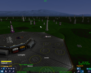

Pioneer
Dieser Artikel wurde für die folgenden Ubuntu-Versionen getestet:
Ubuntu 16.04 Xenial Xerus
Zum Verständnis dieses Artikels sind folgende Seiten hilfreich:
Pioneer ist eine quelloffene, originalgetreue Nachbildung der 3D-Weltraumsimulation „Frontier: Elite II (1993)“ in moderner 3D-Graphik. Das Projekt wurde 2008 gestartet und ist seither soweit gewachsen, dass es zwar noch nicht komplett fertig, aber bereits einwandfrei spielbar ist.
Das Projekt ist, wie viele quelloffenen Projekte, plattformübergreifend für Linux, Mac und Windows verfügbar und steht unter der GPL-Lizenz.
„Frontier: Elite II“ ist der Nachfolger des Klassikers Elite (1984), welches mit Oolite ebenfalls eine moderne Neuimplementierung besitzt.
Die Aufgabe des Spielers ist es, mit seinem Raumschiff durch die Milchstraße zu fliegen und auf verschiedenste Arten Geld zu verdienen (lukrativer Handel, Kurierdienste, Piraterie, etc.). Pioneer versucht, das Gleichgewicht zwischen Simulation und Spiel zu halten. So wird z.B. das Newton'sche Physikmodell verwendet, wodurch ein Körper (im Weltraum) für jede Kraft, die auf ihn wirkt, auch eine entsprechende Gegenkraft braucht, um wieder gestoppt zu werden. Dies macht die Steuerung anfangs etwas gewöhnungsbedürftig.
Beide Elite-Spiele wurden maßgeblich von David Braben entwickelt. Elite II war seiner Zeit deutlich voraus, z.B. gab es aufwendige Licht- und Schattenberechnungen, sowie eine genaue Simulation des jetzigen Sonnensystems mit computergesteuerten Raumschiffen, was für die 16bit-Ära natürlich revolutionär war. Dafür lief das Spiel auch entsprechend langsam auf dem Amiga und Atari ST, was viele Spieler störend empfanden. Zudem war Braben bei der Entwicklung von Elite II unter Zeitdruck, weshalb es bei der Erstveröffentlichung viele Programmfehler gab, die erst nach und nach behoben wurden.
Das neueste Spiel in der Elite-Serie ist „Elite: Dangerous“.
Installation¶
Zuerst muss man sich eine Kopie des Spiels in der gewünschten Architektur (Linux32 / Linux64) von der Webseite  herunterladen und mit dem Archivverwalter entpacken[2].
herunterladen und mit dem Archivverwalter entpacken[2].
Hinweis!
Fremdsoftware kann das System gefährden.
Alternativ kann man den Quellcode herunterladen und selber kompilieren. Die entsprechende Anleitung ist auf der
Github-Seite von Pioneer zu finden.
Benutzung¶
Pioneer starten¶
Anschließend kann man im Dateiverwalter in den Ordner des Spiels wechseln und mit einem Doppelklick der Datei pioneer das Programm ausführen.
Spielen¶
Der Start¶
Im Hauptmenü angekommen, kann man mit drei verschiedenen Startpositionen beginnen:
auf der Erde (man startet in Los Angeles, es ist jedoch ein schwieriger Start, da sich eine gute Handelsroute nur schwer finden lässt. Startschiff: Sinonatrix)
auf „New Hope“ (ein Eisplanet im Sonnensystem „Epsilon Eridani“, welches etwas von unserem System entfernt ist. Startschiff: Pumpkinseed)
auf „Barnards Star“ (ein unserem System benachbartes System. Startschiff: Amphiesma)
Steuerung¶
Nachdem man ein Spiel gestartet hat, findet man sich in der sogenannten „Cockpit-Ansicht“ wieder. Am unteren Bildschirmrand sieht man verschiedene Knöpfe, welche jeweils mit einem kleinen „F “ beschriftet sind. Dies steht jeweils für die Tasten F1 bis F12 , welche gleichbedeutend mit einem Klick auf den jeweiligen Knopf sind.
Die Raumschiffe haben an fast allen Seiten kleine oder große Schubdüsen, welche man mit I , K , J , L , U , O bedienen kann (jeweils in Richtung: Vorwärts, Rückwärts, Rechts, Links, Unten, Oben). Die Drehung des Schiffs kann man mit W , S , A , D , Q und E beeinflussen (jeweils Drehung nach: Vorne, Hinten, Links (Horizontal), Rechts (Horizontal), Links (Vertikal), Rechts (Vertikal) ). Außerdem kann die Drehung auch bequem mit der rechten Maustaste vorgenommen werden. Geschossen wird mit der Leertaste.
Nun kann man seinen ersten Start vornehmen: Man benutzt den Knopf (oder die Taste) F4 , um mit den Einrichtungen der jetzigen Station zu interagieren. Nun kann man gleich den Knopf „Starterlaubnis anfordern“ betätigen und schon startet man. Nach kurzer Zeit, wenn die Schubdüsen mit dem Start fertig sind, wird man langsam aber sicher von der Gravitation des Planeten erfasst und fällt nach unten. Dies kann verhindert werden, indem man mit dem Knopf A die Steuerungsart umstellt, und zwar auf den „Geschwindigkeit setzen“-Modus. In diesem Modus versucht das Raumschiff, sich selbst immer nur mit der gesetzten Geschwindigkeit in die Blickrichtung zu bewegen, indem es mit den Düsen etwaige andere Bewegungen ausgleicht (z.B. die Gravitation). Diese Ziel-Geschwindigkeit kann mit ⏎ vergrößert und mit dem rechten ⇧ verkleinert werden.
Nun kann man, erneut mit F4 , ein Autopiloten-Menü aufrufen, in welchem sich am rechten Rand bequem das Ziel (ein Planet, eine Raumstation o.ä.) auswählen lässt, während man dann mit den Menüpunkten an der eher linken Seite die Aktion, welche man für das Ziel ausführen will, wählen kann (z.B. in die Nähe des Ziels fliegen, an das Ziel andocken, in Umlaufbahn um Ziel fliegen, etc).
Um in Pioneer von einem Sonnensystem in das Nächste zu „springen“, muss man durch die sogenannte „Hyperspace“ springen. Dies wird gemacht, indem man mit F2 in die Galaxie-Karte geht und nun ein anderes System innerhalb seiner Reichweite anklickt. Mit dem Mausrad kann die Entfernung verändert werden, und man kann einen weißen Kreis sehen, welcher die maximale Reichweite für heinen Hyper-Sprung des Raumschiffes angibt. Ist dieser Kreis jedoch sehr klein, so geht der Tank des Schiffes zur Neige und kann wieder aufgefüllt werden, indem man, wenn man irgendwo gelandet ist, mit F4 die Station „anruft“ und dann die beiden Tanks (es gibt einen für Hyper-Sprünge und einen für die normale Fortbewegung innerhalb von Systemen) auffüllen läßt. Achtung: Dies kostet, wie jede Ware, Geld und verbraucht Laderaum. Also muß man immer ein gutes Gleichgewicht zwischen Treibstoff und Warenladung halten.
Handeln, Handelsrouten¶
Um beim Handeln mit Gütern (gute) Gewinne erzielen zu können, muss man eine gute Handelsroute finden. Dies kann erreicht werden, indem man mit F2 (oder per Klick) die Sternkarte anzeigen lässt und dann mit F7 Informationen über das jetzige System abruft. Nun kann man oben auf „Wirtschaftsinformationen“ klicken und kann so die Güter sehen, welche von diesem System importiert und exportiert werden. Nun wäre es geschickt, wenn man die unter „Wichtige Exporte“ aufgeführten Waren kaufen würde, um sie dann im nächsten System, das man anfliegen möchte, zu verkaufen. Dazu ist aber wichtig, dass das Zielsystem (mit F2 in der Sternenkarte ein anderes System anklicken) bei den Wirtschaftsinformationen diese Ware als wichtigen Import oder zumindest als Import hat. Andernfalls kann der Handel schnell zu einem Minus-Geschäft werden...
Konfiguration¶
Falls das Spiel nicht läuft oder Grafikfehler auftauchen, wird für ältere Grafikkarten neben einem „OpenGL 3.1“-Renderer auch ein „OpenGL 2.1“-Renderer zur Verfügung gestellt. Um diesen zu verwenden, muß man in der Datei ~/.pioneer/config.ini die Zeile
RendererName=Opengl 2.1
umändern (von „Opengl 3.x“ zu „Opengl 2.1“).
Handbuch¶
Ein Handbuch für das Spiel ist im Pioneer-Wiki unter Manual zu finden.
Bilder¶
| Hauptmenü |
|  |
| Los Angeles in der Zukunft… |
| „Mutter Erde“ |
| Raumstation |
| Raumhafen auf einem Planeten |
Infobox¶
| Pioneer | |
| Genre: | 3D-Weltraum-Flugsimulation |
| Sprache: |  / / etc. / / etc. |
| Veröffentlichung: | 2008 |
| Entwickler: | pioneerspacesim.net |
| Systemvoraussetzungen: | 3D-Beschleunigung mit min. OpenGL 2.1, ca. 1 GB RAM, ca. 1 GHz Prozessor |
| Medien: | hier herunterladen |
| Läuft mit: | nativ |
- Erstellt mit Inyoka
-
 2004 – 2017 ubuntuusers.de • Einige Rechte vorbehalten
2004 – 2017 ubuntuusers.de • Einige Rechte vorbehalten
Lizenz • Kontakt • Datenschutz • Impressum • Serverstatus -
Serverhousing gespendet von